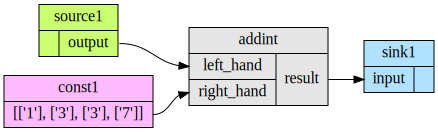

Quick start guide¶
This manual will show users how to install WORC, configure WORC and construct and run simple networks.
Installation¶
You can install WORC either using pip, or from the source code.
Installing via pip¶
You can simply install WORC using pip:
pip install WORC
Note
You might want to consider installing WORC in a virtualenv
Installing from source code¶
To install from source code, use git via the command-line:
git clone https://github.com/MStarmans91/WORC.git # for http
git clone ssh://git@github.com:MStarmans91/WORC.git # for ssh
To install to your current Python environment, run:
cd WORC/
pip install .
This installs the scripts and packages in the default system folders. For
Windows this is the python site-packages directory for the WORC python
library. For Ubuntu this is in the /usr/local/lib/python3.x/dist-packages/ folder.
Note
If you want to develop WORC, you might want to use pip install -e . to get an editable install
Note
You might want to consider installing WORC in a virtualenv
Configuration¶
WORC has defaults for all settings so it can be run out of the box to test the examples. However, you may want to alter the fastr configuration to your system settings, e.g. to locate your input and output folders and how much you want to parallelize the execution.
Fastr will search for a config file named config.py in the $FASTRHOME directory
(which defaults to ~/.fastr/ if it is not set). So if $FASTRHOME is set the ~/.fastr/
will be ignored.
For a sample configuration file and a complete overview of the options in config.py see
the Config file section.
Creating a simple network¶
If Fastr is properly installed and configured, we can start creating networks. Creating a network is very simple:
>>> import fastr
>>> network = fastr.create_network(id='example', version='1.0')
Now we have an empty network, the next step is to create some nodes and links. Imagine we want to create the following network:
Creating nodes¶
We will create the nodes and add them to the network. This is done via the network create_ methods.
Let’s create two source nodes, one normal node, and one sink:
>>> source1 = network.create_source('Int', id='source1')
>>> sink1 = network.create_sink('Int', id='sink1')
>>> addint = network.create_node('fastr/math/AddInt:1.0', tool_version='1.0', id='addint')
The functions Network.create_source,
Network.create_sink
and Network.create_node
create the desired node and add it into the Network.
A SourceNode and SinkNode only require the datatype to be specified. A Node requires a
Tool to be instantiated from. The id option is optional for all four, but makes
it easier to identify the nodes and read the logs. The tool is defined by a namespace,
the id and the version of the command. Many packages have multiple version which are
available. The tool_version argument reflects the version of the Fastr wrapper which
describes how the command can be called. For reproducibility also these are checked as they
might be updated as well.
There is an easy way to add a constant to an input, by using a shortcut method.
If you assign a list or tuple to an item in the input list, it
will automatically create a ConstantNode and a Link
between the ContantNode and the given Input:
>>> [1, 3, 3, 7] >> addint.inputs['right_hand']
Link link_0 (network: example):
fastr:///networks/example/1.0/nodelist/const__addint__right_hand/outputs/output ==> fastr:///networks/example/1.0/nodelist/addint/inputs/right_hand/0
The created constant would have the id const_addint__right_hand_0 as it
automatically names the new constant const_$nodeid__$inputid_$number.
Note
The use of the >>, <<, and = operators for linking is discussed
bellow in section Creating links.
In an interactive python session we can simply look at the basic layout of
the node using the repr function. Just type the name of the variable holding
the node and it will print a human readable representation:
>>> source1
SourceNode source1 (tool: Source:1.0 v1.0)
Inputs | Outputs
-------------------------------------------
| output (Int)
>>> addint
Node addint (tool: AddInt:1.0 v1.0)
Inputs | Outputs
---------------------------------------------
left_hand (Int) | result (Int)
right_hand (Int) |
This tool has inputs of type Int, so the sources and sinks need to have a matching datatype.
The tools and datatypes available are stored in fastr.tools and
fastr.types. These variables are created when fastr is
imported for the first time. They contain all the datatype and tools specified
by the json or xml files in the search paths. To get an overview of the tools
and datatypes loaded by fastr:
>>> fastr.tools
ToolManager
...
fastr/math/Add:1.0 1.0 : .../fastr/resources/tools/fastr/math/1.0/add.xml
fastr/math/AddInt:1.0 1.0 : .../fastr/resources/tools/fastr/math/1.0/addint.xml
...
>>> fastr.types
DataTypeManager
...
Directory : <URLType: Directory>
...
Float : <ValueType: Float>
...
Int : <ValueType: Int>
...
String : <ValueType: String>
...
The fastr.tools variable contains all tools that Fastr could find during
initalization. Tools can be chosen in two tways:
tools[id]which returns the newest version of the tool
tools[id, version]which returns the specified version of the tool
Creating links¶
So now we have a network with 4 nodes defined, however there is no relation between the nodes yet. For this we have to create some links.
>>> link1 = source1.output >> addint.inputs['left_hand']
>>> link2 = sink1.inputs['input'] << addint.outputs['result']
This asks the network to create links and immediately store them inside the network. A link always points from an Output to an Input (note that SubOutput or SubInputs are also valid). A SourceNode has only 1 output which is fixed, so it is easy to find. However, addImage has two inputs and one output, this requires us to specify which output we need. A normal node has a mapping with Inputs and one with Outputs. They can be indexed with the appropriate id’s. The function returns the links, but you only need that if you are planning to change the properties of a link.
The operators with >> and << clearly indicate the direction of the desired data flow.
Also they return the created link, which is easy if you want to change the flow in a link later on.
The last short hand uses the assignment, but it cannot return the created link and changing the link
later on is more difficult.
Create an image of the Network¶
For checking your Network it is very useful to have a graphical representation
of the network. This can be achieved using the Network.draw method.
>>> network.draw()
'example.svg'
This will create a figure in the path returned by the function that looks like:
Note
for this to work you need to have graphviz installed
Running a Network¶
Running a network locally is almost as simple as calling the Network.execute method:
>>> source_data = {'source1': {'s1': 4, 's2': 5, 's3': 6, 's4': 7}}
>>> sink_data = {'sink1': 'vfs://tmp/fastr_result_{sample_id}.txt'}
>>> run = network.execute(source_data, sink_data)
>>> # Lots output will appear on the stdout while running
>>> run.result # Show if the run was successful or if errors were encountered
True
As you can see the execute method needs data for the sources and sinks. This
has to be supplied in two dict that have keys matching every
source/sink id in the network. Not supplying data for every source and
sink will result in an error, although it is possible to pass an empty
list to a source.
Note
The values of the source data have to be simple values or urls
and values of the sink data have to be url templates. To see
what url schemes are available and how they work see
IOPlugin Reference. For the sink url
templates see SinkeNode.set_data
For source nodes you can supply a list or a dict with values.
If you supply a dict the keys will be interpreted as sample ids and
the values as the corresponding values. If you supply a list, keys
will be generated in the form of id_{N} where N will be index of the value
in the list.
Warning
As a dict does not have a fixed order, when a
dict is supplied the samples are ordered by key to get
a fixed order! For a list the original order is retained.
For the sink data, an url template has to be supplied that governs how the data
is stored. The mini-lanuage (the replacement fields) are described in the
SinkNode.set_data method.
To rerun a stopped/crashed pipeline check the user manual on Continuing a Network